AFRICAST
AFRICASTTidy time series & forecasting in R
Time series foundation models
Session 10 of 10


Outline
- Introduction
- Transfer learning
- Overview of foundation models
- Example: forecasting Australian tourism
- Evidence from public health forecasting
- Further reading and lab notebook
Foundation models
Which time series foundation models have you heard of?
Introduction
Can a pretrained model forecast our tourism series?
We want forecasts for the next four quarters of Snowy Mountains holiday travel.
What changes in this session?
We start with a model that has already learned from many time series.
- Supply the tourism history.
- Examine the forecasts and their errors.
- Try adapting the model to this history.
ETS: same method, different fitted models
We use the same fitting method, but learn from each region’s history separately.
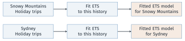
What changes with a foundation model?
We can reuse a model already trained on many series, then supply our tourism history to obtain a forecast.
What is a foundation model?
Train broadly, then reuse
A foundation model is trained on large, varied data so that it can be reused for a range of tasks and settings.
- The initial training is called pretraining.
- For forecasting, this training uses a collection of time series.
- We supply our tourism history and ask the trained model for the next four quarters.
Four characteristics to remember
1. Large, varied training data
Learn from many examples and settings.
3. Reusable across tasks
Apply the trained model to different series.
2. Often many parameters
Learned numbers store the model’s behaviour.
4. Can be adapted
Further training can tailor it to our data.
These features make reuse possible. They do not guarantee the best forecast for every series.
Attention combines information from the history
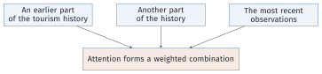
- Different parts of the history can receive different weights.
- A transformer uses attention and neural-network layers to process this information.
Two common routes to foundation-model forecasting
1. Models built for time series
Learn from collections of time series, then forecast a new series.
TimeGPT, Chronos-2, TimesFM and Moirai follow this route.
2. Language models adapted for forecasting
Start with a pretrained language model and adapt how time-series inputs and forecasts are represented.
Examples: PromptCast and Time-LLM. Our code uses the first route.
Advantages and disadvantages
| Advantages | Disadvantages |
|---|---|
| Use out-of-the-box forecasting pipelines | Privacy concerns |
| Can generate forecasts with few data points | No control of model’s capabilities |
| Require less forecasting expertise | May not be optimal for every use case |
| Reusable across tasks | High resource requirements |
For our tourism example
Getting a forecast is easier. We still need to check whether it is useful.
Transfer learning
Pretraining and forecasting are separate stages
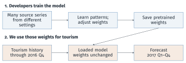
Using a model learned from other series is transfer learning.
What makes building a foundation model difficult?
| Challenge | What the model developer must handle |
|---|---|
| Different frequencies and domains | Quarterly tourism and hourly energy demand have different patterns. |
| Different forecast horizons | One week means 7 daily values or 168 hourly values. |
| Training resources | Large-scale training takes time, memory and often GPUs. |
| Enough varied training data | Open time-series data can be scarce; combining sources takes work. |
Why start with pretrained weights?
We can reuse that training effort, then test the model on our own task.
Zero-shot or fine-tuning: what changes?
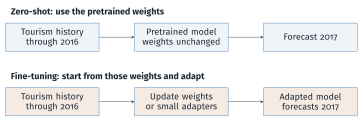
Both use tourism history. Neither is allowed to learn from the 2017 test observations.
Overview of foundation models
Comparing foundation forecasting models
| Model | Architecture | Input representation | Forecast output |
|---|---|---|---|
| TimeGPT-1 | Encoder–decoder | History and positions | Point and intervals (API) |
| Chronos-2 | Encoder-only | Patches; optional predictors | Quantiles |
| TimesFM 2.5 | Decoder-only | Historical patches | Point and quantiles |
| Moirai 1.0 | Encoder-only | Patches; optional predictors | Distribution |
| Lag-Llama | Decoder-only | Lags and time features | Distribution |
| Tiny Time Mixers | MLP mixer | Patches; predictors when adapted | Point forecasts |
Foundation models can also work with tables
Examples: TabPFN and TabICL.
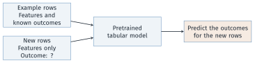
- Pretrain on many tasks, often using simulated tables.
- Use example rows as context; keep pretrained weights fixed.
- For forecasting, turn time and calendar information into features.
TimeGPT: an encoder–decoder transformer
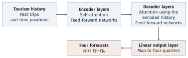
Attention combines information across positions. A feed-forward network refines the information at each position.
TimeGPT: the model runs on Nixtla’s service
- For tourism, send the history and ask for four quarters.
- Set fine-tuning arguments to adapt the model to that history.
- The call needs an API key and available account quota.
Chronos-2: an encoder-only transformer
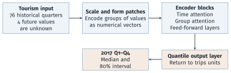
Time attention: share information across the history.
Group attention: share information across related series or predictors, when supplied.
10-minute break
After the break
Forecast quarterly tourism, examine outputs, and compare zero-shot forecasts with fine-tuned forecasts.
Example: forecasting Australian tourism
Our forecasting task
- Series: Snowy Mountains, Holiday travel.
- Target: quarterly overnight trips, in thousands.
- History: 1998 Q1 to 2017 Q4, 80 observations.
- Task: forecast the four quarters of 2017 using data available through 2016.
The steps we will follow
Prepare the history → forecast → evaluate → adapt → compare.
From a tsibble to model input
Select the same series in R. We will pass it to the models through their Python interfaces:
The Python interface uses three columns:
| Workshop column | Model column | Meaning |
|---|---|---|
| Region and Purpose | unique_id |
Series identifier |
| Quarter | ds |
Quarter-start date |
| Trips | y |
Trips, thousands |
Prepare the tourism series in Python
The model needs an identifier, a date and the number of trips.
import pandas as pd
import numpy as np
tourism = pd.read_csv("data/tourism.csv", parse_dates=["Quarter"])
keep = ((tourism.Region == "Snowy Mountains") &
(tourism.Purpose == "Holiday"))
df = tourism.loc[keep].rename(columns={"Quarter": "ds", "Trips": "y"})
df["unique_id"] = "Snowy Mountains / Holiday"
df = df[["unique_id", "ds", "y"]].sort_values("ds")
H = 4
history, test = df.iloc[:-H], df.iloc[-H:]Result: 76 historical observations and 4 test observations.
History, validation and the final test
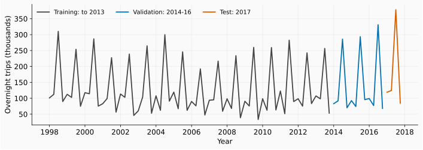
Validation uses three four-quarter forecasts covering 2014–2016. The 2017 observations are reserved for the final comparison.
Start with a seasonal-naive forecast
For each quarter of 2017, repeat the corresponding observation from 2016.
[99.21, 77.21, 330.99, 67.95]These are forecasts for Q1–Q4, in thousands of trips. Every model will be compared with this benchmark on the same dates.
Zero-shot forecasting with TimeGPT
h=4: four quarters; QS: quarter-start dates; level=[80]: an 80% interval.
Zero-shot forecasting with Chronos-2
Load the model and request a median forecast with an 80% interval.
What does the Chronos-2 output contain?
| ds | 0.1 | 0.5 | 0.9 |
|---|---|---|---|
| 2017-01-01 | 87.67 | 110.23 | 136.42 |
| 2017-04-01 | 64.07 | 85.74 | 110.65 |
| 2017-07-01 | 247.12 | 278.78 | 311.71 |
| 2017-10-01 | 52.49 | 74.47 | 97.20 |
0.5 is the median forecast. 0.1 and 0.9 are the lower and upper interval limits. Values are thousands of trips.
Chronos-2: forecasts and intervals
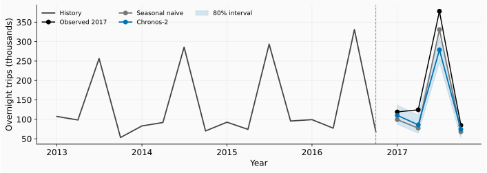
The model misses the winter peak. Its 80% interval contains 2 of the 4 observed quarters; four quarters are too few to assess long-run coverage.
MAE or RMSE?
Let \(e\) be the observed number of trips minus the forecast.
| Measure | Calculation | How to read it |
|---|---|---|
| MAE | \(\operatorname{mean}(\lvert e\rvert)\) | Average absolute miss |
| RMSE | \(\sqrt{\operatorname{mean}(e^2)}\) | Gives large misses more weight |
- Both are in thousands of trips; smaller is better.
- Keep MAE as the main measure for our median forecasts.
- Also report RMSE to show the effect of large errors.
Calculate both errors on the same forecasts
Match each forecast with the observation for that quarter.
MAE: 39.27; RMSE: 53.75Before changing the model, check its performance on earlier forecast periods as well.
Check earlier forecasts before choosing settings
Forecast one year at a time, using only the history available then.
| History ends | Forecast year |
|---|---|
| 2013 Q4 | 2014 |
| 2014 Q4 | 2015 |
| 2015 Q4 | 2016 |
| Model | Validation MAE | Validation RMSE |
|---|---|---|
| Seasonal naive | 17.68 | 20.65 |
| Chronos-2 | 18.45 | 23.13 |
These scores cover 12 validation quarters. Keep 2017 for the final test.
Fine-tuning TimeGPT
Use the same history and horizon, with ten training updates.
finetune_stepscounts training updates;hcounts future quarters.finetune_loss="mae"uses absolute errors during adaptation.- Compare on the same four quarters using both metrics.
Fine-tuning Chronos-2 with LoRA
LoRA trains a small set of added weights while keeping the original weights fixed.
lora_settings contains the fixed training settings listed in the notebook.
What changes?
We get an adapted model. The history and the four forecast dates stay the same.
Forecast again with the adapted model
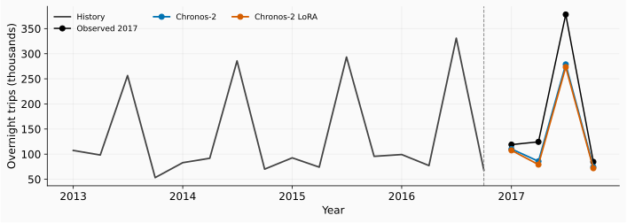
The adapted model still misses the winter peak. Did its overall error improve?
Results on the held-out tourism year
| Model | MAE | RMSE |
|---|---|---|
| Seasonal naive | 32.73 | 35.80 |
| Chronos-2 | 39.27 | 53.75 |
| Chronos-2 LoRA | 43.55 | 57.68 |
Both measures: thousands of trips. Chronos-2 rows use median forecasts.
Seasonal naive has the smallest error under both measures. Ten-step LoRA made both scores worse; this one year cannot establish a general ranking.
What other information is known when we forecast?
Suppose we are forecasting in December 2016.
| Information for 2017 | Available now? |
|---|---|
| Calendar quarter | Yes |
| Actual weather | No |
| Actual number of trips | No: our forecast target |
Supply historical predictor values and any future values known at forecast time.
The lab uses calendar features through future_df. Check their value on earlier forecasts.
Evidence from public health forecasting
Beyond tourism: forecasts for health supplies
- 20,736 monthly product-location series from Lao.
- Five clinical domains; forecast horizons of 1, 3 and 6 months.
- Compare pretrained and fine-tuned models with statistical and global forecasting benchmarks.
Why use RMSSE here?
RMSSE is RMSE divided by a scale based on historical seasonal changes. It lets us compare errors across series with different volumes. Smaller is better.
Lao health supplies: accuracy and runtime
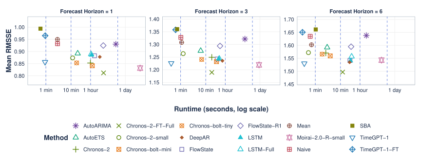
Lower and further left is preferable. Chronos-2 fine-tuning improves accuracy here, but adds computation.
Further reading and lab notebook
Continue with the tourism lab
- Read and reproduce saved outputs first.
- Run models when credentials or weights are available.
- Try another region and purpose, using earlier validation periods.
- Record the version, data split, metrics and one limitation.
Independent lab
exercises/day5-foundation_models/tourism_lab.ipynb
Further reading
- FPP Python, Chapter 15: foundation models and transfer learning.
- Peixeiro, Time Series Forecasting Using Foundation Models, Chapters 1 and 2: concepts and the pretraining-to-adaptation flow.
- Nixtla and Chronos: executable APIs.
- Bergmeir, Forecasting for Data Scientists, Theory Session 2: global models and evaluation.
- Molnar (2026), Tabular Foundation Models, Chapters 3–4 and 9: in-context prediction and forecasting.
- Tourism documentation. We use the workshop’s CSV snapshot.
- Harsha Chamara Hewage, Bahman Rostami-Tabar, Aris Syntetos and Federico Liberatore. Foundation models in low-resource settings: Evaluating AI-driven forecasting in global health supply chains.
Optional: turn tourism forecasting into a table
One row per quarter; predict trips from the feature columns.
| Quarter | Time index | Quarter of year | Trips (thousands) |
|---|---|---|---|
| 2016 Q1 | 73 | 1 | 99.21 |
| 2016 Q2 | 74 | 2 | 77.21 |
| 2016 Q3 | 75 | 3 | 330.99 |
| 2016 Q4 | 76 | 4 | 67.95 |
| 2017 Q1 | 77 | 1 | ? |
| 2017 Q2 | 78 | 2 | ? |
| 2017 Q3 | 79 | 3 | ? |
| 2017 Q4 | 80 | 4 | ? |
Use historical rows as context. Supply future features; keep future trips unknown.
Optional: patches and embeddings
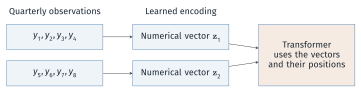
- A patch is a group of consecutive observations.
- An embedding turns that patch into a list of numbers the model can process.
- Position information preserves the order of the patches.
Optional: attention weights
Attention combines information from past patches.
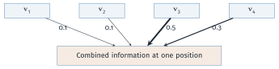
- Here the combination is \(0.1\mathbf{v}_1+0.1\mathbf{v}_2+0.5\mathbf{v}_3+0.3\mathbf{v}_4\).
- Each attention head forms its own combination.
Optional: historical training windows
Use a past window to predict the observations immediately after it.
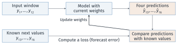
Repeat across windows and series. The training targets are already in the historical data.